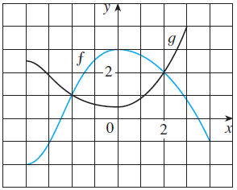

4 The graphs of f and g are given.

(a) State the values of \(f(-4)\) and
\(g(3)\).
(b) For what values of x is (c) Estimate the solution of the equation
\(f(x) = -1\).
(d) On what interval is f decreasing?
(e) State the domain and range of f.
(f) State the domain and range of g.
Solution:
(a) Looking at the curve f on the y-axis when \(x = -4\), we find that the matching y value
is \(y = -2\). Doing the same thing for
the curve g when \(x = 3\), we find
that the matching y value is \(y =
4\).
(b) For \(f(x) = g(x)\), their curves
need to cross each other on the graph. The x values for when that happen
are \(x = -2\) and \(x = 2\).
(c) Matching the x value on the f curve when \(y = -1\) gives \(x = -3\).
(d) For f to be decreasing, \(f(x_2) <
f(x_1)\) whenever \(x_1 <
x_2\) on the interval. Therefore, f is decreasing on \(I: [0,4]\).
(e) The minimum x value on the f curve is -4 and the maximum is 4. The
minimum y value on the f curve is -2 and the maximum is 3. Therefore,
the domain is: \([-4,4]\) and the range
is: \([-2,3]\).
(f) The minimum x value on the g curve is -4 and the maximum is 3. The
minumum y value on the g curve is 0.5 and the maximum is 4. Therefore,
the domain is: \([-4,3]\) and the range
is: \([0.5,4]\).